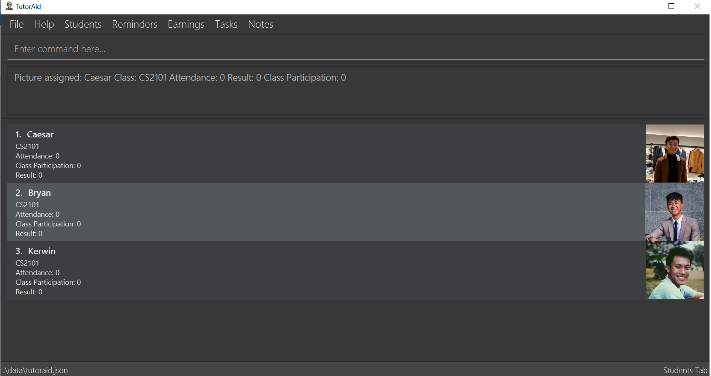
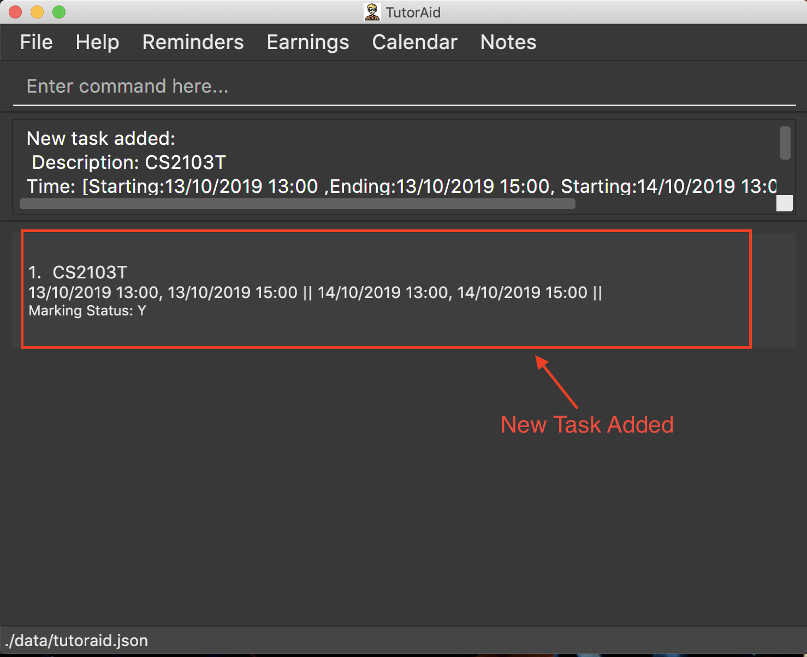
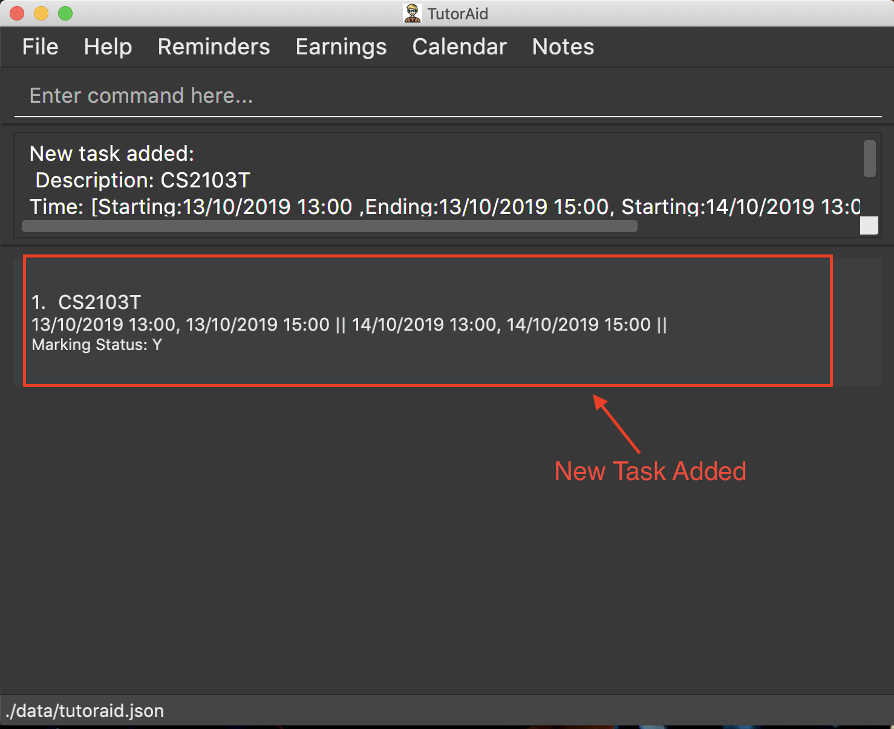

By: Team CS2103-F14-2 Since: Sept 2019 Licence: MIT
- 1. Introduction
- 2. Quick Start
- 3. Features
- 3.1. Viewing help :
help - 3.2. Register :
register - 3.3. Login :
login - 3.4. Change tab :
tab - 3.5. Calender
- 3.6. Earnings
- 3.7. Notes
- 3.8. Student List
- 3.9. Learn wrong commands
- 3.10. Clearing all entries :
clear - 3.11. Undoing previous command :
undo - 3.12. Redoing the previously undone command :
redo - 3.13. Exiting the program :
exit - 3.14. Saving the data
- 3.15. Logout :
logout - 3.16. Upcoming Features
- 3.17. Encrypting data files
[coming in v2.0]
- 3.1. Viewing help :
- 4. FAQ
- 5. Command Summary
1. Introduction
Are you a teaching assistant that is struggling to keep up with the additional responsibility of teaching a class?
Do you sometimes wish that there was an easier way to organize and filter through your students?
As a broke uni student, do you desperately need a tool to keep track of your earnings?
1.1. Look no further! TutorAid is the one stop solution to answer all of your TA woes!
TutorAid is for teaching assistants or tutors who prefer to use a desktop app for managing their classes and related tasks. TutorAid helps in organizing all the information you need in one place so that you can optimize your workflow. More importantly, TutorAid is optimized for those who prefer to work with a Command Line Interface (CLI) while still having the benefits of a Graphical User Interface (GUI).
This User Guide was written to help you understand and familiarize yourself with all the commands TutorAid has to help you get started.
If you can type fast, TutorAid can get your tasks done faster than traditional GUI apps. Interested? Jump to the Section 2, “Quick Start” to get started. Enjoy!
2. Quick Start
-
Ensure you have Java
11or above installed in your Computer. -
Download the latest
tutoraid.jarhere. -
Copy the file to the folder you want to use as the home folder for your TutorAid.
-
Double-click the file to start the app. The GUI should appear in a few seconds.
 -
Type the command in the command box and press Enter to execute it.
e.g. typinghelpand pressing Enter will open the help window. -
Some example commands you can try:
-
help: Links you to the User Guide so you can view how to use all the available commands. -
add_taskc/CS2103T Lecture mark/Y tt/20/9/2019 16:00, 20/9/2019 18:00: adds a classId named CS2103T that is on 20th September 2019 4pm. -
claimed earnings02/07/2022 CS2100: marks that you have claimed this earnings. -
exit: exits the app
-
-
Refer to Section 3, “Features” for details of each command.
3. Features
Command Format
-
Words in
UPPER_CASEare the parameters to be supplied by the user e.g. inadd n/NAME,NAMEis a parameter which can be used asadd n/John Doe. -
Items in square brackets are optional e.g
n/NAME [t/TAG]can be used asn/John Doe t/friendor asn/John Doe. -
Items with
… after them can be used multiple times e.g.tt/TASK_TIME…can be used astt/…,tt/… tt/…etc. -
Parameters can be in any order e.g. if the command specifies
n/NAME p/PHONE_NUMBER,p/PHONE_NUMBER n/NAMEis also acceptable.
3.1. Viewing help : help
Format: help
3.2. Register : register
Register an account with the application to start using it.
Format: register user/USERNAME pass/PASSWORD
Examples:
* register user/Steve pass/Pa55w0rd!
3.3. Login : login
Login a registered account with the correct username and password.
Format: login user/USERNAME pass/PASSWORD
Examples:
* login user/Steve pass/Pa55w0rd!
3.4. Change tab : tab
Change tab to any of the available ones.
Format: change_tab tab/DESTINATION
Examples (All available destinations listed):
-
change_tab tab/earnings -
change_tab tab/calendar -
change_tab tab/student_profile -
change_tab tab/reminders -
change_tab tab/notepad -
change_tab tab/task
3.5. Calender
3.5.1. Adding task: add_task
Adds a task to one or more time slots.
Format: add_task c/MODULE mark/STATUS tt/TASK_TIME…
|
A task can have more than one time slots. STATUS should only be Y or N. TASK_TIME should be in the format "dd/MM/YYYY HH:mm, dd/MM/YYYY HH:mm".If there are multiple task times, they will be automatically sorted based on their starting time. |
Examples:
-
add_task c/CS2103T mark/Y tt/13/09/2019 13:00, 20/09/2019 16:00 tt/21/09/2019 13:00, 21/09/2019 15:00
 

-
add_task c/MA1521 Tutorial mark/N tt/02/11/2020 14:00, 02/11/2020 15:00
3.5.2. Editing task: edit_task
Update task information.
Format: edit_task INDEX [c/CLASSID] [mark/STATUS] [tt/TASK_TIME]
|
INDEX must be a positive integer. At least one element inside task should be edited. |
Examples:
-
edit_task 1 c/CS2103
-
edit_task 1 tt/19/10/2019 12:00, 19/10/2019 14:00 mark/N
3.5.3. Deleting task: delete_task
Deletes selected task.
Format: delete_task INDEX
| INDEX must be a positive integer. |
Examples:
-
delete_task 1

3.5.4. Finding tasks based on Module : find_task_by_module
Find specific tasks by Module and list them.
Format: find_task_by_module MODULE …
Examples:
-
find_task_by_module cs2100

-
find_task_by_module CS2103T, cs2100
3.5.5. Finding tasks based on Date : find_task_by_date
Find specific tasks by Date and list them.
Format: find_task_by_date DATE …
Examples:
-
find_task_by_date 20/10/2019

3.5.6. Listing all tasks : list_task
List all tasks.
Format: list_task
3.5.7. Setting Reminder Details : addReminder
Add Reminder
Adds reminders.
Format: addReminder rd/DESCRIPTION rt/TIME
Examples:
-
addReminder rd/Cs2103T homework rt/21/9/2019 13:00, 21/9/2019 15:00
3.5.8. User Interface
View in calendar format.
Format: change_tab tab/FORMAT
Example:
-
change_tab tab/calendar -
change_tab tab/tasks
3.6. Earnings
3.6.1. Add Earnings: add_earnings
Adds Earnings to the list of earnings.
Format: add_earnings d/DATE type/TYPE c/CLASSID amt/AMOUNT
Examples:
-
add_earnings d/19/09/2019 type/lab c/CS2103T amt/50.70
3.6.2. Update Earnings: update_earnings
Update Earnings in the list of earnings by adding one of the parameters at least.
Format: update_earnings INDEX d/DATE c/CLASSID amt/AMOUNT type/TYPE
Examples:
-
update_earnings 2 d/14/04/2020 type/lab
3.6.3. Delete Earnings: delete_earnings
Delete Earnings in the list of earnings.
Format: delete_earnings INDEX
Examples:
-
delete_earnings 2
3.6.4. Find Earnings: find_earnings
Find Earnings in the list of earnings.
Format: find_earnings keywords …
Examples:
-
find_earnings CS2103T
3.6.5. Claim Earnings: claim_earnings
Changes the user the earnings status in the list of earnings.
Format: claim_earnings INDEX c/CLASSID
Examples:
-
claim_earnings 2 claim/rejected
3.7. Notes
3.7.1. Add Note: addnote
Adds Note to the list of notes.
Format: addnote mod/MODULE_CODE c/CONTENT
Examples:
-
addnote mod/CS2103T c/Check for project submission date
3.7.2. Edit Note: editnote
Update Note in the list of notes.
Format: editnote INDEX mod/MODULE_CODE c/CONTENT
Examples:
-
editnote 1 mod/CS2103T -
editnote 1 c/check for meeting time -
editnote 1 mod/CS2103 c/update project content
3.7.3. Delete Note: deletenote
Delete Note in the list of notes.
Format: deletenote INDEX
Examples:
-
deletenote 1
3.7.4. Find Note: findnote
Delete Note in the list of notes.
Format: findnote KEYWORD
Examples:
-
findnote CS2103T
3.7.5. Listing all note : listnote
List all note.
Format: listnote
3.8. Student List
3.8.1. Add a student: 'add'
Adds a student to TutorAid.
Format: add n/NAME c/CLASSID
| You can add multiple students at a time by separating their names with a single ','. |
| Please also note that you can’t add students with the exact same name in the same class. e.g. You can add "Tom" in CS2030 and CS2040 but not 2 "Tom"s in CS2030. If there are students with the same first name in the class, please add their last name as well. |
Examples:
-
add n/Caesar,James,Todd c/CS2030
3.8.2. Delete a student: 'delete'
Deletes a student from TutorAid.
Format: delete INDEX
Examples:
-
delete 1(deletes the first student.)
3.8.3. Find a student: 'find'
Find a student matching the supplied name.
Format: find NAME
Examples:
-
find Tom
3.8.4. List all students in a class: 'list_class'
Lists all students in supplied class name.
Format: list_class CLASSID
Examples:
-
list_class CS2030
3.8.5. Mark attendance of students: 'mark_attendance'
Marks attendance of students currently displayed.
Format: mark_attendance INDEXES
mark_attendance increases attendance of all selected students by exactly 1.
|
Examples:
-
mark_attendance 1,2,3
3.8.6. Mark participation of students: 'mark_participation'
Marks participation of students currently displayed.
Format: mark_participation INDEXES
mark_participation increases participation of all selected students by exactly 1.
|
Examples:
-
mark_participation 1,2,3
3.8.7. Assign students to a class: 'assign_class'
Assigns a class to a student or a group of students.
Format: assign_class INDEXES c/CLASSID
Examples:
-
assign_class 1,2,3 c/CS2030
3.8.8. Edit a student: 'edit'
Edits a Student’s fields.
Format: edit INDEX n/NAME pic/PICTURE r/RESULT att/ATTENDANCE part/PARTICIPATION c/CLASS
User does not have to edit all fields of a Student. He can just edit whatever needs to be changed (see example). As such, result of a student can be assigned using this command. e.g. edit 1 r/79
|
Examples:
-
edit 1 r/20 att/10 part/10 c/CS2030
3.8.9. List students: 'list'
List all students in TutorAid.
Format: list

list command does not take any arguments.
|
3.8.10. Add a picture to a student: 'set_pic'
Adds a picture to display next to the student card.
Format: set_pic INDEX pic/FILENAME
| The picture specified must be in either .jpg, .png or .bmp format. It must also be located in the same directory as TutorAid. |
Examples:
-
set_pic 2 pic/Tom.jpg
3.8.11. View serial absentees with defined threshold: 'absentees' [Coming in v2.0]
Displays list of all students who have not met the set threshold in terms of attendance.
Format: absentees THRESHOLD_PERCENTAGE
| Calculation will be done from start of semester to the current date. |
Examples:
-
absentees 50(Gives a list of students whose attendance fall below 50%)
3.8.12. Check on status of student: 'check_status' [Coming in v2.0]
Checks on status of students currently displayed in the list by sending them an e-mail enquiring on their status.
Format: check_status
To be used in conjunction with absentees. A preset generic email will be sent by TutorAid to the student’s school email account.
|
3.8.13. Upload a picture of the student: 'upload_pic' [Coming in v2.0]
Launches a separate window where the user can either choose an image file on his computer or take a picture with his webcam.
The picture will be assigned to the indicated student and be displayed in TutorAid.
Format: upload_pic INDEX
| Replaces current picture, if any. |
Examples:
-
upload_pic 1
3.9. Learn wrong commands
Accidentally typing in a wrong/unknown command laucnhes TutorAid into learner mode. You can choose to learn this wrong command to execute an existing
command by typing in its command word. Alternatively, you can type cancel to revert back to normal operations.
You can’t learn a full command (e.g. add n/Caesar c/CS1231). Doing so will result in an error. TutorAid only allows command words like add.
|
Examples:
-
ad(instead ofadd) → TutorAid will prompt the user what they meant. Typeaddnow to be able to useadas anaddcommand in the future.
3.9.1. Delete a custom command: 'deleteCustomCommand'
Deletes a custom command you previously added. This custom command will be forgotten by TutorAid and will not be able to be used anymore.
Format: deleteCustomCommand CUSTOMCOMMAND
Examples:
-
deleteCustomCommand insertPreviouslyAddedCommandHere
3.10. Clearing all entries : clear
Clears all entries from the address book.
Format: clear
3.11. Undoing previous command : undo
Restores the Tutor Aid to the state before the previous undoable command was executed.
Format: undo
|
Undoable commands: those commands that modify the Tutor Aid’s content ( |
Examples:
-
delete 1
list
undo(reverses thedelete 1command)
-
list_task
find_earnings
undo
Theundocommand fails as there are no undoable commands executed previously. -
delete 1
edit_task 1 mark/N
undo(reverses theedit_task 1 mark/Ncommand)
undo(reverses thedelete 1command)
3.12. Redoing the previously undone command : redo
Reverses the most recent undo command.
Format: redo
Examples:
-
delete 1
undo(reverses thedelete 1command)
redo(reapplies thedelete 1command)
-
delete 1
redo
Theredocommand fails as there are noundocommands executed previously. -
delete 1
edit_task 1 mark/N
undo(reverses theedit_task 1 mark/Ncommand)
undo(reverses thedelete 1command)
redo(reapplies thedelete 1command)
redo(reapplies theedit_task 1 mark/Ncommand)
3.13. Exiting the program : exit
Exits the program.
Format: exit
3.14. Saving the data
Address book data are saved in the hard disk automatically after any command that changes the data.
There is no need to save manually.
3.15. Logout : logout
Logs out of the account.
Format: logout
3.16. Upcoming Features
3.16.1. Filter Earnings: filter_earnings
Filters Earnings in the list of earnings based on either classid/date/week/month.
Format: filter_earnings variable
Examples:
-
filter_earnings v/week
3.17. Encrypting data files [coming in v2.0]
{explain how the user can enable/disable data encryption}
4. FAQ
Q: How do I transfer my data to another Computer?
A: Install the app in the other computer and overwrite the empty data file it creates with the file that contains the data of your previous Address Book folder.
5. Command Summary
-
Help :
help -
Log :
login user/USERNAME pass/PASSWORD
register user/USERNAME pass/PASSWORD
logout -
Tab :
tab TAB_DESTINATION -
Calendar:
add_task c/MODULE mark/STATUS tt/TASK_TIME…
edit_task INDEX [mark/STATUS] [tt/TASK_TIME]
delete_task 1
find_task_by_module MODULE …
find_task_by_date DATE …
list_task -
Reminder :
reminder INDEX STATUS -
Earnings :
add_earnings d/DATE c/CLASSID amt/AMOUNT
update_earnings d/DATE c/CLASSID amt/AMOUNT type/TYPE
delete_earnings d/DATE c/CLASSID
find_earnings k/KEYWORD …
claim_earnings d/DATE c/CLASSID
filter_earnings VARIABLE -
Note :
addnote mod/MODULE_CODE c/CONTENT
editnote INDEX mod/MODULE_CODE c/CONTENT
deletenote INDEX
findnote KEYWORD
listnote -
Student List :
add n/NAME c/CLASSID
delete INDEX
edit INDEX n/NAME pic/PICTURE r/RESULT att/ATTENDANCE part/PARTICIPATION c/CLASS
list
find NAME
set_pic INDEX pic/FILENAME
assign_class INDEXES c/CLASSID
list_class CLASSID
mark_attendance INDEXES
mark_participation INDEXES -
Undo :
undo -
Redo :
redo -
Clear :
clear -
Exit :
exit